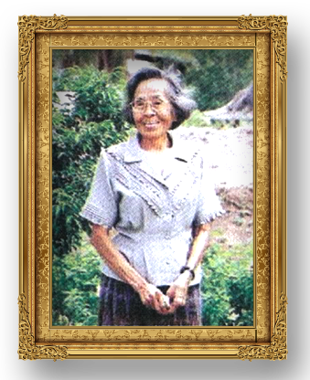

มูลนิธิ พร รัตนสุวรรณ
มูลนิธิพร รัตนสุวรรณ ได้ใช้ชื่อของอาจารย์พร รัตนสุวรรณ เป็นชื่อของ มูลนิธิ เดิมชื่อ มูลนิธิส่งเสริมการสอนพระพุทธศาสนาของเยาวชน ตั้งมาตั้งแต่ 2510 เมื่ออาจารย์พร เสียชีวิต ก็เปลี่ยนชื่อ มาเป็น มูลนิธิพร รัตนสุวรรณ เพื่อเป็นเกียรติแก่ผู้ก่อตั้งมูลนิธิ และสีบทอดเจตนารมย์ของอาจารย์ ประการ สำคัญคือ ให้มูลนิธิทำงานแทนอาจารย์พร ประหนึ่งอาจารย์ยังมีชีวิตเพื่อจะได้ เข้าใจงานของมูลนิธิ ฯ จึขอนำเสนอภูมิหลังของผู้ก่อตั้งโดยสังเขป...อาจารย์ พร รัตนสุวรรณ เกิดที่จังหวัดอตรดิตถ์ บวชเป็นสามเณรตั้งแต่เด็ก มาเรียน หนังสือและบวชเป็นพระภิกษุ อยู่ที่วัดมหาธาตุ ห่พระจันทร์ ศึกษาภาษาบาลี สอบได้เปรียญธรรม 6 ประโยค โดยมุ่งจะให้สามารถอ่านพระไตรปิฎกได้ ในระหว่างที่เป็นพระภิกษุได้ศึยพระไตรปิฎกอย่างจริงจัง โดยใช้เวลาถึง 4 ปี และลงมือปฏิบัติวิปัสสนาในหลายที่หลายแห่งอย่างต่อเนื่องอีกระยะหนึ่ง ภายหลังต้องลาสิขาเพราะป่วยเป็นวัณโรค และท้ายที่สุดมหาจุหลงกรณ ราชวิทยาลัยได้เชิญมาเป็นอาจารย์สอน วิชาธรรมประยุกต็ คือการสอนสมาธิ วิปัสสนา
อาจารย์ถึงแก่กรรมเมื่อ ปี พ.ศ. 2536 สิริรวมอายุได้ 74 ตลอดชีวิตอาจารย์พร ไม่ได้ประกอบอาชีพอื่นนอกจากงานเผยแพร่พระพุทธศาสนา เป็นวลานับสิบปี งานของอาจารย์ (ซึ่งคืองานของมลพิริ) มีอยู่มากมาย แยกไต้เป็น 3 กลุ่มใหญ่ ๆ คือ
1. การฝึกตนเองและการฝึกผู้อื่น
1.1 ศึกษาคำสอนหงพระพุทธศาสพา ทั้งปรียัติและปฏิบัติ โดยฉพาะอย่างยิ่งทางปฏิบัตินั้น อาจารย์สนใจ
ตั้งแต่สมัยยังเป็นสมณร และเป็นพระภิกษุ
1.2 ก่อตั้งสำนักธรรมวิจัย บรรยาขรรรม สอนสมาธิวิปัสสนาในวัดมหาธาตุ ห่พระดันทร์ มีผู้คนจำนวนมาก ทั้งมราวาส และพระภิกษุสงฆ์ นิสิต นักสึกษา และนักเรียนให้ความสนใจ
2. การจัดสถานที่ฝึกคน ซึ่งเป็นงนหลักที่มีความสำคัญยิ่ง ในกรฒนาคน ต้องสถานที่อำนวยความละตวกในการฝึกคน "มนุษย์ เป็นสัตว์ระเสริฐเพราะการฝึก มนุษย์นั้นถ้ไฝึก หาประเสริฐไม่" จาจรย์พร ห็นความสำคัญของเรื่องนี้มาก ได้จัดสถานที่ฝึกอบรมไว้ 3 แห่ง คือ
2.1 ที่สำคคันคทางวิญญาณ บางลำพุ เป็นอคารอเพกประสงค์ ที่พักอาศัยและที่ตั้งโรงพิมพ์ "วิญญาณ"ออกหนังสือพิมฬ วิญญาณ (วารสารรายเตือน มีสมาชิกประมาณ 4,000 คน) เป็นการใช้สื่อสัดมเพื่อการผยแพรรรมะในสมัยเมื่อ 40 ปีก่อน และอาคารใช้เป็นสำนักงานสำหรับ คณะผู้ตรวจชำระ พระธรรมศัมภีร์ ทางพระพุทธศาสนา
2.2 ที่ศูนย์พัฒนาศาสนแคมป์สน จำเอเขาค้อ จังหวัดเหชรบูรณ์ (รายละเอียดตอนท้าย)
2.3 อาคารปฏิบัติรรรม มูลนิธิพร รัตนสุวรรณ อำเภอสามโคก จังหวัดปทุมธานี ตั้งอยู่ที่อำเภอสามโคก จังหวัดปทุรนี บนพื้นที่ 6 ไร่ศษ บริจาคให้มูลนิธิพรฯ โดยอาจารย์ทัศนีย์ บุรุษพัฒน์ มูลนิธิได้ก่อสร้างอาคารสามชั้น ใช้เป็นสถานที่ปฏิบัติธรรม มีห้องประชุมใหญ่ ขนาด 100 คน พร้อมเครื่องปรับอากาศและเครื่องอำนวยความสะดวกในการอบรม ที่พักสำหรับผู้เข้าอบรม หรือปฏิบัติธรรมด้วย
3. การผลิตเอกสาร เพื่อเผแพร่คำสนทางพระพุทธศาสนา โดยยนหนังสือเกี่ยวกับธรรมจำนวนมาก เช่น คู่มือฝึกอานาปานสติ พุทธวิทยา พระตนตรัย สุขภาพจิต ฯลฯ และที่สำคัญมีคุณค่แก่การใช้ศึษาธรรมพระพุทธศาสนาคือ การเป็นผู้นำในการตรวถชำระพระธรรมคัมภีร์อรรถกถา-ฎีกา จำนวน 108 เล่ม แล้วพิมพ์เล่มละ 1,000 ชุด แจกจ่ายไปยังมหาวิทยาลัยและสถานศึกษาต่าง ๆ ที่ศึกษาด้านพระพุทธศาสนา
อาคารปฏิบัติธรรม อ.สามโคก
อาจารย์ทัศนีย์ บุรุษพัฒน์
อ.พร ถวายชำระพระธรรมคัมภีร
สมเด็จพระสังฆราชฯ วัดบวรนิเวศ
ศูนย์พัฒนาศาสนาแคมป์สน อำเคอเขาค้อ จังหวัดเพชรบูรณ์
แคมสน อันเป็นที่ตั้งศูนย์พัฒนศาสนา เป็นชื่อตำบลหนึ่ในอำเภอเขาคง จังหวัดเพชรบูรณ์ อยู่ห่างจากกรุงเทพประมาณ 400 กม. สูงจากระดับ น้ำทะเลปานกลาง 750 มตร เป็นถิ่นาสนเมืองหนาว อากาศเย็น ในอตีตเมื่อผ่านถนนสายหล่สัก - พิบณุโลก ตัดผ่าน จอมพลสฤษดิ์ ธนรัชต์ ได้จับจอง ที่ดินบริเวณนี้ พื้นที่ประมาณ 2,000 ไร่ ต่อมาที่ดินนนี้ตกเป็นของกรมธนารักษ์ กระทรวงการคลัง ชาวบ้านได้เข้าถือครองและแย้วถางเพื่อปลูกกะหล่ำปลี ข้าวโพด และพืชผักอื่ ๆ บางพวกผาป่าเพื่อสำสัตว์ ฯลฯ จนที่ดินที่เป็นปาส่วนใหญ่มีสภาพโล่งเตียน หน้าดินถูกทำลาย กิดความแห้งแล้งทั่วไป ในปี 2518 อาจารย์พร รัตนสุวรรณ ได้ซื้อสิทธิในที่ตินจกชาวบ้านที่ได้เข้มาทำกินในที่ดินของกรมธนารักษ์นั้น และขอเช่าที่ตินจากกรมธนารักษ์ ในนามจุพาลงกรณ ราชวิทยาลัย และทำการพัฒนาเรื่อยมา พื่อให้เป็นที่ปฏิบัติธรมสำหรับพระนิลิต พระส มรวาส เด็ก และเยาวชน โดยใช้เวลากว่ายี่สิบปี ในการปลูกป่า และการพื้นฟูสภาพปา การติดตั้งสาธารณูปโภค ทำถนนหนทาง การติดตั้งไฟฟ การขุดสระน้ำ การก่อสร้าง และปรับปรุงอาคาร ฯลฯ เพื่อให้เหมาะสม กับการเป็นสถานที่พัฒนาคน
สิ่งก่อสร้างที่สำคัญ ในศูนย์พัฒนาศาสนาแคมป์สน
"ณ ผืนดินอันเป็นที่ตั้งศูนย์พัฒนาศาสนานี้ บรรดาสน น้องสน ลูกส ตลอดจนเดกรวดทราย ย่อมเป็นพยานได้ว่า เกือบไม่มีจุดไหนที่รอยเท้า อาจารยพรไม่เคยเหยียยและย่ำ ไม่มีเม็ดดินยอดไม้ใบหญ้ใด ๆ ที่ไมได้รองรับหยาดเหงื่อของอาจารย์พร วันแล้ววันเล่า ตลอดเวลา 18 ปี เพื่องานของ มหาจุฬาๆ...
อนุสรณ์อาจารย์พร
สร้างสถูปศาลาสถาพร
สิ้นสำเนียงเสียงธรรมเคยสดับ
มวลศิษย์สร้างร่างเหมือนเตือนวิญญาณ
สร้างคัมภีร์พระชินวร ก่อนรอนราญ
ท่านล่วงลับดับจิตปลิดสังขาร
เพื่ออาสาสืบสานงานต่อไป